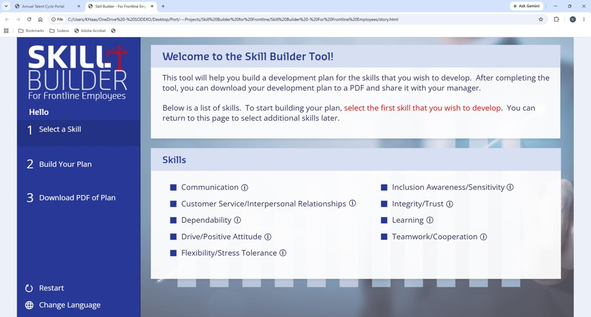
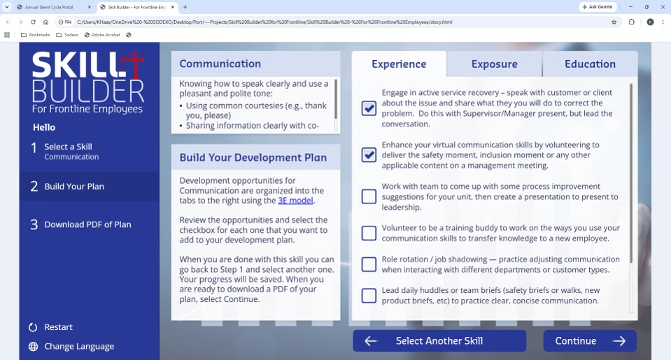
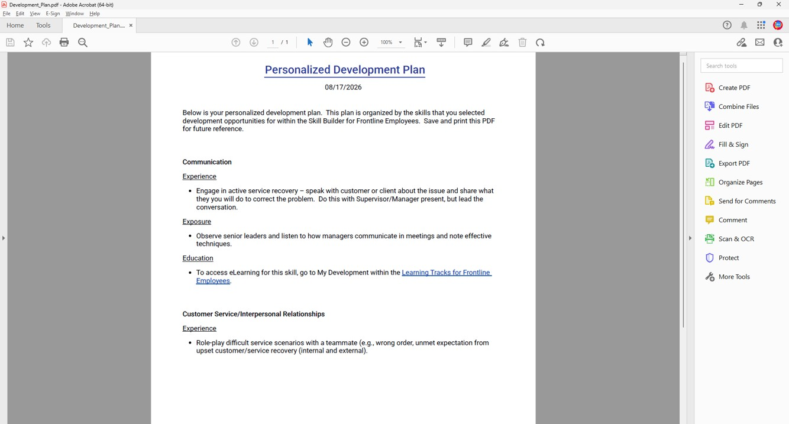

Case Study
Skill Builder Tool Development
A guided, self-service tool that walks frontline employees from picking a skill to a downloadable, personalized development plan — built in Storyline with JavaScript PDF generation and xAPI reporting behind it.

The Challenge
Frontline employees needed a simple way to identify a skill they wanted to develop and turn that choice into an actionable development plan. The goal was a guided, self-service experience that made development planning easy to understand, personalize, and revisit over time.
My Approach
I designed and developed the Skill Builder in Articulate Storyline, using my UX/UI background to create a simple, guided three-step experience — select a skill, build a development plan, and download a PDF copy of the finished plan.
After an employee selects a skill, the tool presents development opportunities organized around the 3E model: Experience (70%), Exposure (20%), and Education (10%). Employees check the opportunities they want and build a plan that reflects their own needs.
Learner Experience
The Skill Builder guides employees through three steps — Select a Skill, Build Your Plan, Download PDF of Plan — and the simple structure keeps it focused. After choosing a skill, employees review Experience, Exposure, and Education opportunities and check the activities they want. Selections persist between sessions so they can return and update the plan, while xAPI and LRS reporting give visibility into the plans created and the opportunities chosen.


Technology & Development
Articulate Storyline
Primary platform for the workflow, skill selection, checkboxes, variables, triggers, and progress functionality.
JavaScript + pdfmake
Used the pdfmake library to generate the PDF dynamically from the Storyline variables holding the selected opportunities.
Persistent Progress
Saved selections between sessions so plans could be revisited, updated, and completed over time.
xAPI / LRS Reporting
Tracked the plans created through the tool and built dashboards to analyze activity and the opportunities employees chose.
Business Impact
- Created a simple, self-service experience that guided frontline employees from skill selection to a completed development plan.
- Used the 3E model to organize development opportunities into Experience, Exposure, and Education.
- Enabled employees to build and revisit personalized plans by saving checkbox selections between sessions.
- Used xAPI and LRS dashboards to track and analyze the plans created and identify patterns in employee selections.
- Added dynamic PDF generation so employees could download a portable copy of their completed plan.

What I Learned
This project strengthened my ability to use Articulate Storyline as an application-development platform, not just a course-authoring tool — and showed how Storyline variables, triggers, JavaScript, and an external library like pdfmake can combine into a practical, personalized digital tool.